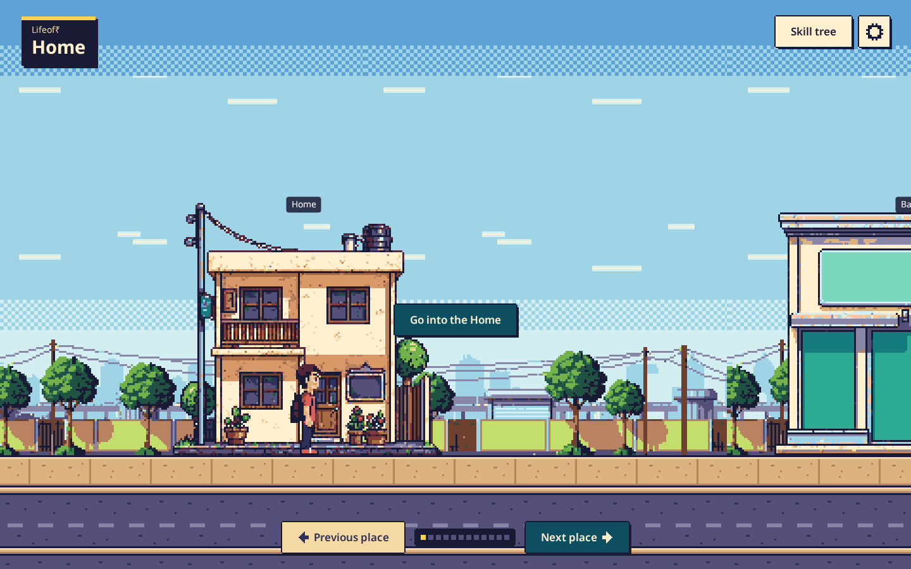
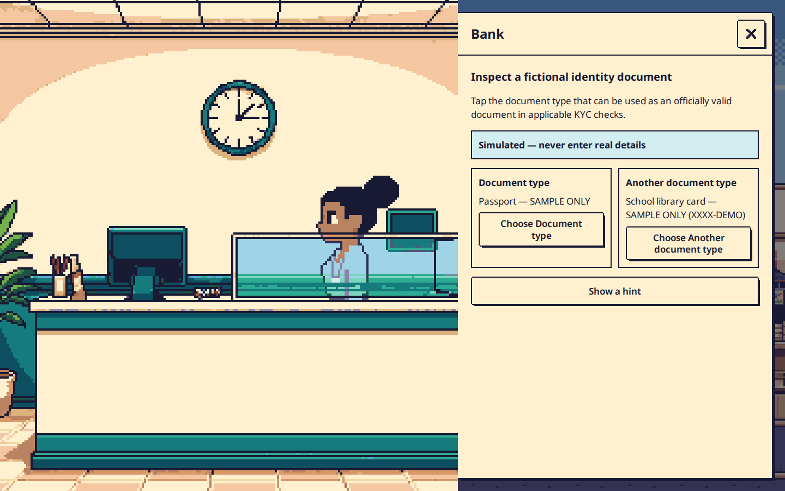
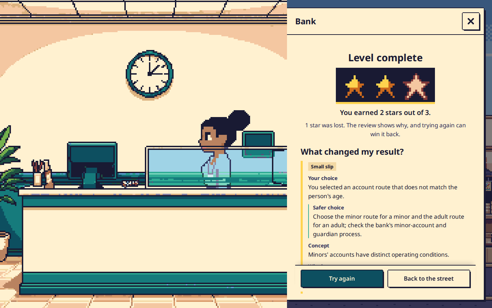
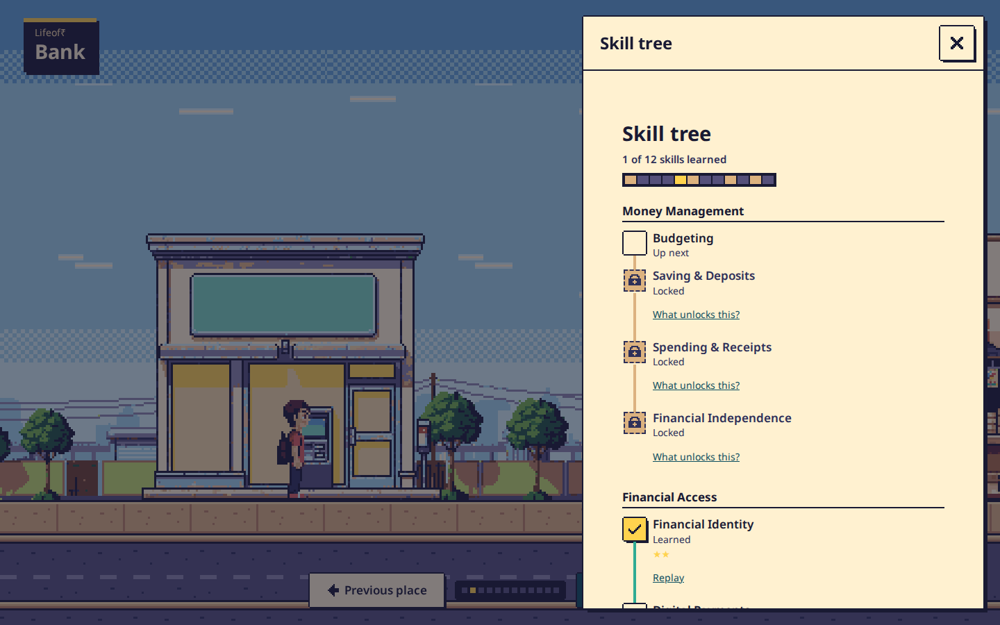
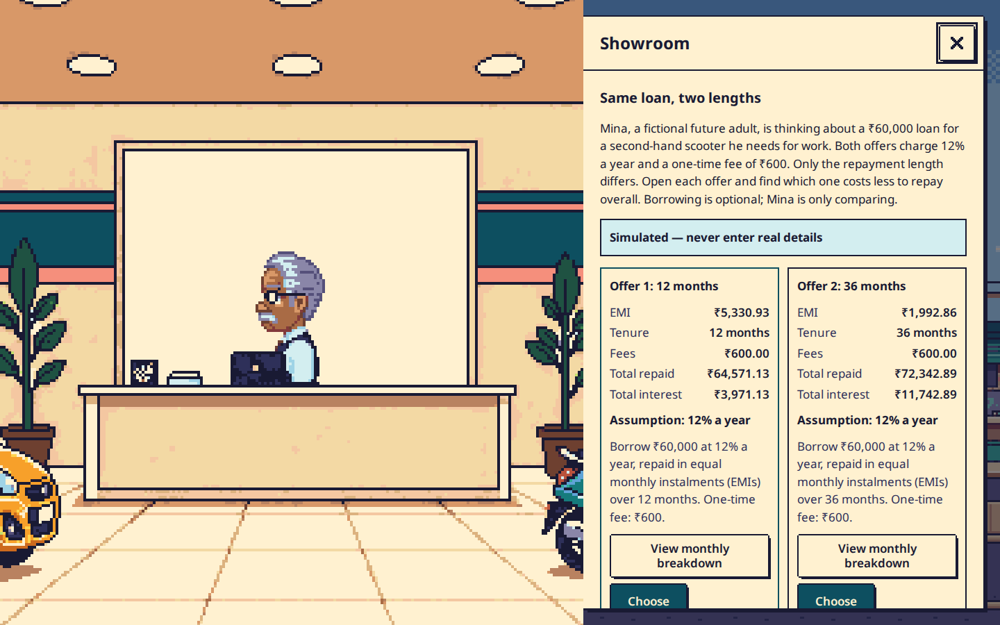

Mina wants to save his festival money for a reading lamp. A visit to the bank begins a journey through an illustrated Indian town, where each choice has a consequence and each lesson follows his home.

A student may recognise “UPI” or “EMI” and still be unsure what to do at a counter, on a payment screen, or after a worrying message. Lifeof₹ lets Grade 11–12 learners practise those moments safely. Every identity, balance, and transaction is fictional.
We built twelve authored missions, from budgeting and banking through UPI safety, borrowing, insurance, investing, and a final connected month. Learners inspect, compare, and decide; specific feedback, replay, a skill tree, and changing places carry their progress forward.
At the bank, Mina wants to save his festival money. The player inspects sample documents and chooses an account route. Pick the adult route and the game explains why the minor route is safer, then gives a new case to apply the lesson. No real document or account detail is entered.


How this grew: M1 set out to prove one complete bank journey. We made that journey playable, then connected UPI, fraud, and loans, then built the remaining eight missions. Reusable interactions, original pixel art, and deterministic rules let the same town hold a full curriculum instead of twelve disconnected quizzes.

In a fictional future-adult case, Mina compares two ₹60,000 loans at 12% a year plus a ₹600 fee. Paying over 36 months feels easier each month, yet raises total repayment from ₹64,571.13 to ₹72,342.89. The player must check both the whole cost and what remains after essentials; postponing is a valid choice when neither offer fits.

The final checkout passed TypeScript, ESLint, content lint, asset lint, a production build, and 580 unit/component tests. Browser journeys exercise phone and desktop sizes, accessibility, offline play, and same-origin requests; the full browser suite still needs a clean pass after transition-case failures. All five images are from the running game.
The game needs no real names, account identifiers, PINs, OTPs, or payments, and core play needs no backend or model. Scores reward reasoning and improvement, never speed or wealth. Financial claims link to Indian public sources. Newer lessons still need final educator sign-off; a classroom pilot and measured learning outcomes are future work.